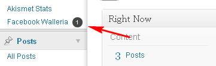
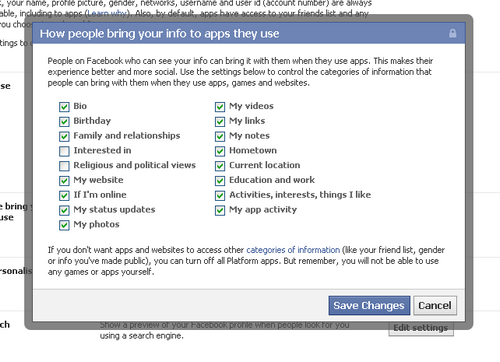
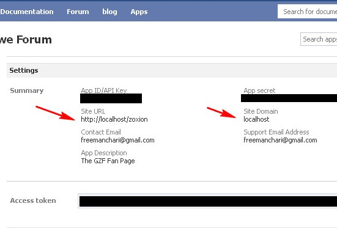
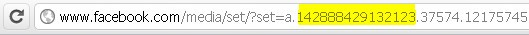

Facebook Walleria 2.5 by Freeman Chari
Table of Contents
- About Facebook Walleria
- Requirements
- Installation & Setup
- Automatic Install
- Manual Install
- Setup
- Updating Facebook Walleria
- How to use
- Show Facebook Wall
- Show Facebook Albums
- Show Facebook Photos
- Show Facebook Events
- Creating your own styles
- Troubleshooting
- No data returned from Facebook
- Call to undefined method Facebook::setAccessToken() error
- Shortcodes
- Widgets
- Using in Templates
- FAQ
- So how does Facebook Walleria’s wall work?
- Is the data legal?
- What kind of facebook information is stored in my database?
- How do I get Application Id and Application Secret?
- How do I create an application
- Can I use the Facebook application on localhost?
- Can I show my personal wall with Facebook Walleria?
- How do I get the facebook username or user id?
- How do I get the facebook username or user id?
- What happens if the user has javascript turned off?
- What happens if the user has javascript turned off?
- Changelog
About Facebook Walleria
Facebook Walleria is a WordPress Plugin that embeds a number of Facebook Objects into your website. It uses the Facebook Graph to pull information about Albums, Photos, Feed, Comments, Events and presents the information on your website in a sleek style.
Instead of doing a double job of updating your site and Facebook profile, Facebook Walleria enables you to update your albums, events and feed on Facebook with the changes appearing in real-time on your website.
Facebook sharing for logged in Facebook users is also integrated with Events and Wall allowing interactivity with your visitors. Commenting and Liking has also been enabled on the Wall, thus your visitors can make comments on topics on your feed without leaving your website.
The potential of Facebook Walleria is massive, as you can also use the Feed/Wall to present any object with a feed, like comments about an event, a group or an application with minimal tweaking.
Call it Seamless Facebook Integration!
Requirements
There are several requirements for Facebook Walleria to work optimally
- Wordpress 3.3 and above
- PHP 5.3 with CURL and above
- jQuery 1.7 and above
Installation & Setup
Automatic Installation
- Navigate to Control Panel: Plugins
- Click Add New
- Upload the .zip file
- Under Facebook Walleria, click Activate
Manual Installation
- Decompress the .zip file you downloaded from CodeCanyon.
- Find the
facebook-walleria folder.
- Upload the
facebook-walleria folder to your wp-content/plugins directory.
- Navigate to your Control Panel: Plugins
- Under Facebook Walleria, click Activate
Setup your Facebook Account
You need to have a valid Application Id and Application Secret from Facebook.
If you don't have one, you can Create a Facebook Application Here
- Navigate to Settings >> Facebook Walleria
- Under Facebook Permissions tab enter you Application Id and Application Secret.
- Save your changes
- If you are entering your App Credentials for the first time, you will be prompted to login at Facebook and to grant permissions to your application.
- Upon granting the permissions, you will be redirected to your site’s admin interface. At this point you will be all set to use the plugin
- otsu@tp2p
Updating Facebook Walleria
When we release an update to FW you will be notified on your Admin Panel as follows

- Log into CodeCanyon using the account that you used to purchase
- Download Facebook Walleria latest version
- Upload your files to your server through an FTP client
How to use
When writing a post you can use the following tags:
Show Facebook Wall
[fpwall id=x]
Where x is the wall’s facebook user id. . For example, if you want to show the facebook platform page wall; you can use [fpwall id='platform'] . If the page does not have an alias, the page id eg [fpwall id=121757457911887].
To show the like-box on the page
[fpwall id=’platform’ url=’http://facebook.com/platform’]
Show Facebook Albums
[fpalbums id=x]
Where x is the userid or page id. This will by default will show 25 recent albums on the user or page profile. To show more or lesser photos
[fpalbums id=x limit=y]
Where y is the number of albums to show eg
[fpalbums id=’endexus’ limit=’10’] will output the last 10 albums
To exclude albums from a list [fpalbums excl='a,b,c,d'] where a,b,c,d are comma-separated IDs of albums to be excluded
To specify albums to show [fpalbums incl='a,b,c,d'] where a,b,c,d are comma-separated IDs of albums to be shown
Show Facebook Album Photos
In a situation where one needs to showcase the photos in an album use
[fpphotos id=x ]
Where x is the album id this will show up to 200 photos in an album by default
To limit the photos
[fpphotos id=x limit=y]
Example
[fpphotos id=’209112642458743’ limit=’20’]
Show photos in Template
In the event that you want to include your photos or albums into your templates. You can call the following php function:
Show Facebook Events
To show all events [fpallevents id=’x’] where x is the id of the user. For example [fpallevents id=’cocacola’] gets all events belonging to cocacola starting with the last 25 by default
To limit the number of events to show per page [fpallevents id=x limit=y] where y is the number per page
To show a single event use [fpevent id=x] where x is the event ID
Creating Your Own Styles
The default styles mimic the styles at Facebook, however you are not limited to using this style alone on your website. You can customize the appearance by adding your CSS rules to style.css in the facebook-walleria folder.
These rules would override the default styles.It is advisable that you backup your installation before attempting to alter the styles.
Troubleshooting
No data returned from Facebook
Most probably you have restricted the data that applications can get from your Facebook account. Go to you Facebook Account >> Privacy Settings >> Apps and Websites >>

Then tick the required permissions
Call to undefined method Facebook::setAccessToken() error
If you get an error like this
Call to undefined method Facebook::setAccessToken() in /xxx/wp-content/plugins/facebook-walleria/facebook-walleria.php
most probably you have a plugin that is using the old Facebook's PHP SDK. You may need to unistall it or update it.
Shortcodes
- [fpalbums id='x'] - Show all albums
- [fpalbums id='x' limit=25] - Show Only 25 photos
- [fpalbums id='x' paging=25] - Show 25 photos per page when album is clicked
- [fpalbums id='x' excl='albumx,albumy'] - Show all albums except albums with ID albumx and albumy
- [fpalbums id='x' incl='albx,alby'] - Show only albums with ID albx and alby
- [fpalbums id='x' showfburl='true'] - Show only albums with ID ans also show the link to Facebook
- [fpphotos id='albx' showfburl='true'] -Show photos in album with ID albx and its Facebook Link
- [fpphotos id='albx'] -Show photos in album with ID albx
- [fpphotos id='albx' limit=25] - Display only 25 photos
- [fpphotos id='albx' paging=25] - Display 25 photos per page
- [fpallevents id='x'] - Display all events belonging to x
- [fpallevents id='x' limit=25] - Display only 25 events
- [fpevent id='eid'] - Display event with id eid
- [fpwall id='x'] - Display x's wall
- [fpwall id='x' limit=25] - Only display 25 posts per page load
- [fpwall id='x' scroll='noscroll'] - Stop autoloading on page scroll
- [fpwall id='x' photostrip=5] - Display only 5 photos on the top photostrip on the wall
Widgets
Facebook Walleria 2.5 has incorporated two widgets.
- Facebook Walleria Photo Widget
- Facebook Walleria Status Widget
This widget allows you to specify an album that you want to showcase. You also specify
the number of thumbnails to show on the widget. On clicking on the thumbnail the photos in
your album will be shown as a Fancy gallery
This allows you to show your Facebook Status on a sidebar
Using in Templates
There are a number of ways to incorporate Facebook Walleria 2.5 into templates.
- Use echo do_shortcode() together with a valid Facebook Walleria Shortcode
- You can use the following functions
FAQ
So how does Facebook Walleria’s wall work?
What happens is that by entering your Facebook App Id and App Secret , FW would ping Facebook and request an access token that does not expire with specified permissions. The access token is stored in your database . This access token would be used to draw information from facebook that you may need to present on your website.
If a person is logged into facebook and visits your site, the site would detect that this so that when he or she wants to comment , like or share he will be prompted to connect with your application first.
Is the data legal?
All the data that you get on your website is provided by Facebook through the Facebook Platform.
What kind of facebook information is stored in my database?
Only the App Id, App Secret and the Access Token are stored in your database from Facebook.
How do I get Application Id and Application Secret?
Get a list of your applications from here: Facebook Application List
Select the application you want, then copy and paste the Application ID and Application Secret from there to the boxes below.
How do I create an application
- Go here to create it: Create a facebook app
- Make sure to enter your correct website address under site url
- Get your app id and app secret from here:
Facebook Application List
- Select the application you created, then copy and paste the Application ID and Application Secret to the settings page
Can I use the Facebook application on localhost?
Yes you can but before you do, edit the application URL at Facebook to http://localhost/[-site-directory-] and the site domain to localhost.
Can I show my personal wall with Facebook Walleria?
Yes you can but you must understand that Facebook Walleria’s wall plugin was made primarily for page walls’ content but it can also work with personal walls.
Can I show group wall with Facebook Walleria?
There is a problem with getting group photos with Facebook Graph thus you will only be able to show the stream and not the photostrip.
Can I show personal albums with FW?
Yes you can just put your user alias into the shortcode and all your albums will be available to you
How do I get the facebook username or user id?
Check the url of your browser after you click profile. If you haven’t set up a personalized username then the numeric numbers as shown below.
Numeric Id
Personalized Id
What happens if the user has javascript turned off?
Usually when you click on an album on facebook a url shows that is more like the one below. The album id is the one after a[dot] to the other dot.

What happens if the user has javascript turned off?
The plugin uses PHP and Javascript to enhance your experience. In the absence of Javascript all enhanced functionality like fancybox would be unavailable however the primary content will be present, so absence of javascript will not mess or reduce the appearance of your primary content.
You will however have an increased page load as content will be loaded synchronous in the absence of javascript. This increase in load time is usually negligible with fast internet. To cater for slower internet we have reduced the number of albums and photos that will be shown in the absence of javascript.
CHANGELOG
=========2.5===============
* Ajax completely rewritten for better security
* [Feature]Photo Sharing
* [Feature]Photo Tagging
* [Feature]Photo sharing
* [Feature]Facebook Connection
* [bug] Fixed the perpetual redirection bug that hindered app setup
* [bug] Edited Fancybox so that it doesnt conflict with any other fancybox installations
* [bug] Fixed the Access Token missing bug
=========2.4===============
* [bug]Solved the album sorting bug
* [bug]Fixed Fancybox on paging of photos
* [bug]Fixed curpage function conflict with other themes
* [Feature] Added Wall Posting for text and Links
* [Feature] Added Photo Widget
* [Feature] Added Status Widget
* [Feature] Better Login Detection Algorithm
2. Fixed Fancybox on paging of photos
=========2.3===============
* [feature]added events to the plugin
* [bug] sorted profile links on Wall plugin
=========2.2===============
* [feature]added paging for photos in albums
* [feature]added update notifier
=========2.0.1 ============
*cleaned the code by making javascript load as external file
* added shortcode attributes excl and incl to exclude albums or include specific albums
=========2.0.0 ===========
First major release after Facebook Page Photo Gallery 1.0.3